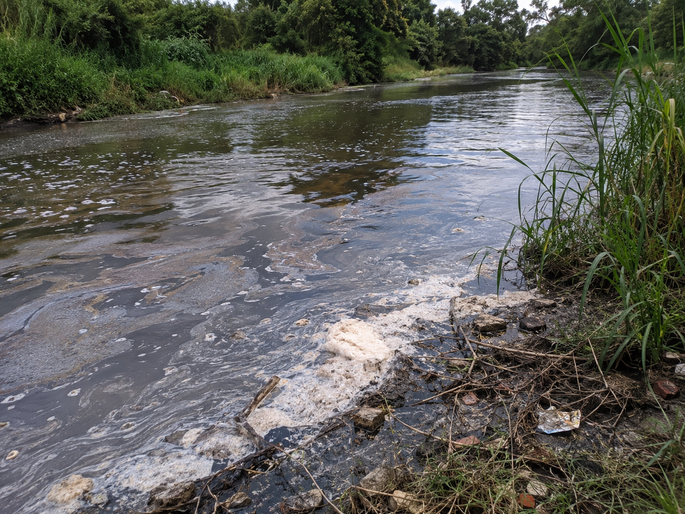
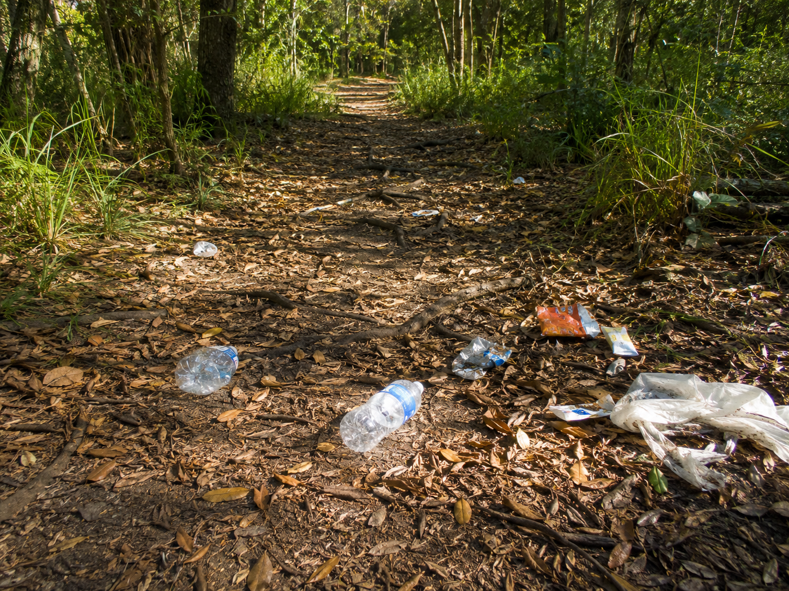

Hold this question in your mind as you work through the lesson. By the end, you should be able to answer it with evidence!
Start here. Learn the words you will use today.
Imagine you're hiking a trail. The stream beside the path looks brown and foamy. Plastic wrappers are tangled in the reeds. Something smells sharp and chemical. Take a minute to think about what you see — then write your observations.
There are no wrong observations. Scientists always start by looking carefully. We'll come back to your ideas at the end of the lesson.
These are the words scientists use when they study how humans affect the environment. Tap each card to flip it and read the definition. You'll see these words throughout the lesson!
Copy this sentence carefully into your science notebook:
"Pollution harms ecosystems by making the air, water, and land unsafe for living things."
Now learn the main science idea.
PollutionpollutionHarmful materials that get into air, water, or land and hurt living things. happens when harmful stuff ends up somewhere it doesn't belong. There are three main types.
Land pollution is trash and chemicals left on the ground. Water pollution is oil, plastic, or waste in rivers and oceans. Air pollution is smoke and gases that make the air unhealthy to breathe. Each type can damage the living things nearby.

Every living thing needs clean water, clean air, and healthy soil to survive. When pollution gets into an ecosystemecosystemAll the living things in a place, plus their surroundings., it can make animals sick and destroy habitatshabitatThe natural place where a plant or animal lives and finds what it needs..
Fish die in rivers full of chemicals. Birds get tangled in floating plastic. Trees weaken when acid from smoky air soaks into the soil. Even small amounts of pollution can cause big problems over time.
Humans cause most pollution — from factories, cars, farming, and throwing away trash. But humans can fix it, too. National parks were created to protect wild places from pollution and development. Scientists clean up oil spills, plant trees, and restore damaged rivers.
Laws also help. They set limits on how much pollution factories are allowed to release. When people work together, ecosystems can recover.
Real-World Connection: The cleanup of the Chesapeake Bay — one of the largest estuaries in the country — took decades of teamwork by scientists, governments, and everyday people to reduce water pollution and bring back fish populations.
Pollution changes the environment. When conditions change, some organisms survive and some don't. But people can take action. Look at how each type of pollution creates a problem — and how a solution can help:
| Pollution Type | What Changes | Effect on Organisms | One Solution |
|---|---|---|---|
| Water pollution | Water becomes unsafe | Fish and water plants get sick or die | Filtration systems clean the water |
| Air pollution | Air quality drops | Animals and plants have trouble breathing or growing | Reduce factory emissions and car exhaust |
| Land pollution | Soil becomes contaminated | Plants can't grow; animals lose food sources | Community cleanup & proper waste disposal |
A good solution reduces the harm to organisms. When you evaluate a solution, ask: does this help the living things that were affected? What evidence shows it works?
Pollution harms ecosystems by making the air, water, and land unsafe for living things. When the environment is polluted, plants and animals can't get what they need to survive.
This is cause and effect in action — a single pollution source can affect many different parts of an ecosystem at once.
Curious? Go Deeper — How National Parks Fight Pollution
The United States has over 400 national parks — and one of their most important jobs is protecting ecosystems from pollution. Inside park boundaries, factories can't dump waste, cars are limited, and land can't be developed. This creates a safe zone for wildlife.
But pollution doesn't stop at the park fence. Smoke from cities far away can drift in and damage trees. Rivers flowing into parks carry pollution from upstream farms and factories. Scientists at parks like Yellowstone and the Everglades spend years monitoring air and water quality to catch problems early.
One success story: in the 1970s, acid rain from factories in the Midwest was killing fish and trees in parks across the Northeast. Scientists sounded the alarm. New laws cut factory emissions, and over the following decades, forests and streams began to recover. It took decades — but it worked.
Now test the idea yourself.

You're a pollution detective. Read each scenario below. For each one, decide what type of pollution it is, then record your findings in the chart in your science notebook.
| # | Type of Pollution | Who or What Is Harmed? |
|---|---|---|
| Scenario 1 | ||
| Scenario 2 | ||
| Scenario 3 | ||
| Scenario 4 | ||
| Scenario 5 | ||
| Scenario 6 |
Scenario 1: A factory releases thick dark smoke from its chimneys all day. The smoke drifts over the nearby forest and the town beyond it.
Scenario 2: Plastic bottles and grocery bags wash off a beach and float out to sea. Seabirds and sea turtles mistake the plastic for food.
Scenario 3: Old car tires and broken appliances are dumped in a vacant lot at the edge of a meadow. Rain soaks through the trash and into the soil beneath.
Scenario 4: A tanker ship leaks oil into the ocean. The oil spreads across the surface, coating the feathers of seabirds and the fur of sea otters.
Scenario 5: Hundreds of cars sit in traffic every morning in a city. Exhaust fumes fill the air. The smog hangs over the city for hours, making it hard for people and animals to breathe.
Scenario 6: A farmer uses too much chemical fertilizer on his crops. When it rains, the extra chemicals wash off the field and flow into a nearby stream, killing the fish and algae that live there.
Think about these questions after finishing your chart. Use specific details from the scenarios.
Tell the story of one pollution scenario from beginning to end — what caused it, what happened next, and who was harmed. Use your chart to help you.
Think through each question on your own. Write your answers in your science notebook before moving on.
Check what you understand.
Show what you learned.
🔍 Part A — Classify the Pollution
Write land, water, or air next to each example in your notebook. Then write one living thing that could be harmed by each one.
🚀 Part B — Short Answer
Answer each question in complete sentences. Use your science vocabulary!
Choose one type of pollution. Explain how it harms living things — and what people can do about it.
What do you think?
💡 Start with: "I think [land / water / air] pollution is especially harmful because…"
What did you learn that supports your thinking?
💡 Start with: "I know this because the lesson showed that…"
Why does that make sense?
💡 Start with: "This makes sense because…"
📚 Try to use at least two of these words: pollution, ecosystem, habitat, water pollution, land pollution, air pollution
🎨 Part C — Draw & Label
Draw an outdoor ecosystem scene — a forest, river, meadow, or coastline — showing one type of pollution entering it. Label at least four parts: the pollution source, the type of pollution, and two living things that are harmed. Add arrows to show how the pollution travels or spreads.
Submit your work on Canvas using one of these options:
Make sure your submission includes all of these: